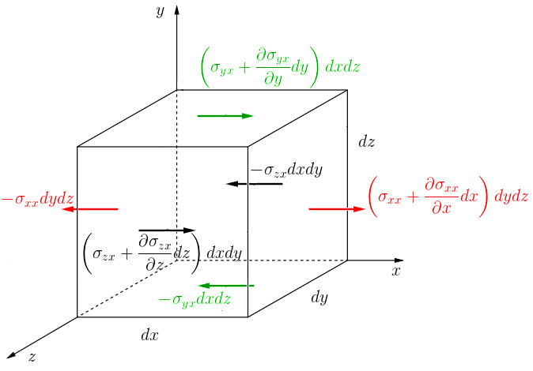

Unidad 1 · Ecuaciones de conservación
Semana 1Bernoulli, ecuación de Cauchy y Navier-Stokes
Principio de Bernoulli
La ecuación de Bernoulli entre dos puntos es:
$$ P_1 + \frac{1}{2}\rho v_1^2 + \rho g h_1 = P_2 + \frac{1}{2}\rho v_2^2 + \rho g h_2 $$
La ley de Newton para el flujo laminar es:
$$ \tau_{yx} = -\mu \frac{dv_x}{dy} $$
1. Ecuación de movimiento de Cauchy
Es la forma más general de la conservación del momentum para cualquier medio continuo:
$$ \rho \frac{D\mathbf{u}}{Dt} = \nabla \cdot \boldsymbol{\sigma} + \rho \mathbf{f} $$
- \(\rho \frac{D\mathbf{u}}{Dt}\): inercia (masa por aceleración sustancial).
- \(\nabla \cdot \boldsymbol{\sigma}\): divergencia del tensor de esfuerzos (fuerzas de superficie).
- \(\rho \mathbf{f}\): fuerzas de cuerpo (como la gravedad).

2. Ecuación de Navier-Stokes
Para fluidos newtonianos e incompresibles (\(\nabla \cdot \mathbf{u} = 0\)):
$$ \rho \left( \frac{\partial \mathbf{u}}{\partial t} + (\mathbf{u} \cdot \nabla)\mathbf{u} \right) = -\nabla p + \mu \nabla^2 \mathbf{u} + \rho \mathbf{g} $$
- \(\rho \frac{\partial \mathbf{u}}{\partial t}\): cambio local de velocidad con el tiempo.
- \(\rho (\mathbf{u} \cdot \nabla)\mathbf{u}\): término advectivo (transporte de momentum por el flujo).
- \(-\nabla p\): fuerza debida al gradiente de presión.
- \(\mu \nabla^2 \mathbf{u}\): término viscoso (difusión de momentum).
- \(\rho \mathbf{g}\): fuerza gravitacional.
Semana 2Ecuaciones de transporte
- Ecuaciones de transporte